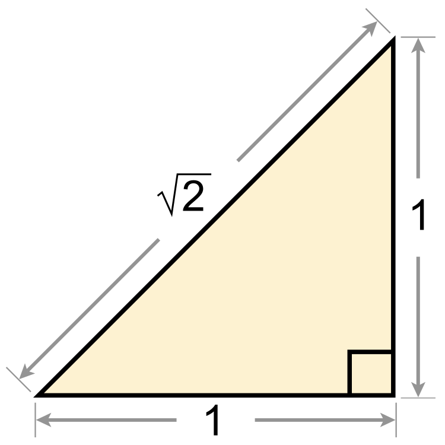

Academic Projects & Mathematical Explorations
Course notes, worked examples, and projects that helped me build a stronger foundation

Numerical Analysis
Numerical analysis is where abstract math starts becoming useful in a very concrete way. I use this section for approximation methods, error analysis, and algorithms that explain how we get reliable answers when an exact solution is hard or impossible.
Real Analysis
Real analysis was one of the classes that forced me to slow down and be precise. The notes here focus on limits, continuity, convergence, and the proofs behind the calculus ideas most of us first meet in a much less formal way.
Statistics & Probability
This section covers the theory that supports a lot of my applied work: probability, inference, regression, experimental design, and the tools that make it possible to reason carefully from data.
Deep Learning
These notes track my deep learning coursework from foundational ideas through more modern architectures. I keep them here as a record of what I learned, what clicked, and what still takes a second pass.